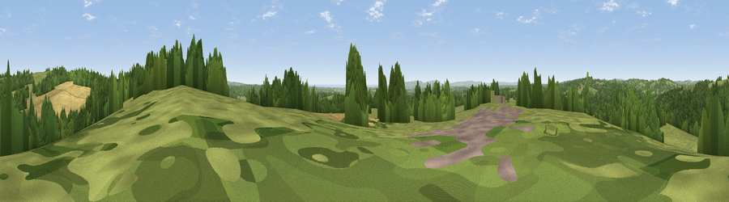

Viewpoint near Dallington
#19039 in England · top 24% of its area beats it · near DallingtonThe view, rendered

A 360° render of this exact spot computed from the terrain model, tree cover and land cover — summer colours, afternoon light, calibrated against photographs of famous viewpoints. Real trees, hedges and buildings will differ in detail.
The panorama
Grey silhouette: terrain skyline in each direction (720 bearings, Earth curvature and refraction included). Dashed green: skyline with trees (+15 m) and buildings (+8 m) as obstacles. Blue strip: how far the ground is visible on each bearing.
Where the view opens
Wedge length = distance to the farthest visible ground on that bearing (vegetation-aware). Rings at 10, 25 and 50 km.
What fills the view
47% grassland · 38% woodland · 14% cropland · 1% water ·
Angular shares of the visible panorama (visual magnitude), not map area. Landscape diversity 0.47 (0–1 Shannon).
Key numbers
More beautiful places nearby
The staircase of upgrades: each row has a higher view potential than everything closer. Driving times are estimates from straight-line distance, calibrated against real road routing — check an actual route before setting out.
| Place | Direction | Drive | Score |
|---|---|---|---|
| Viewpoint near Dallington | E · 1 km | ~2 min | 67.2 |
| Viewpoint near Brightling | NNE · 2 km | ~4 min | 68.0 |
| Brightling Obelisk [Brightling Down] | NNE · 2 km | ~5 min | 69.1 |
| Viewpoint near Three Oaks | ESE · 18 km | ~30 min | 69.3 |
| Viewpoint near Willingdon | SSW · 19 km | ~33 min | 83.4 |
| Wilmington Hill | SW · 20 km | ~34 min | 85.4 |
| Viewpoint near Alciston | SW · 22 km | ~37 min | 86.8 |
| Firle Beacon | SW · 22 km | ~37 min | 88.9 |
50.95025, 0.36721 · source: screening · position refined by local search. Computed location — check access rights before visiting.